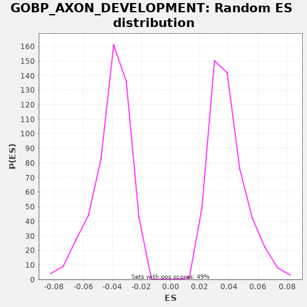

| | | Dataset | A_X_tradeoff |
| Phenotype | NoPhenotypeAvailable |
| Upregulated in class | na_neg |
| GeneSet | GOBP_AXON_DEVELOPMENT |
| Enrichment Score (ES) | -0.21955925 |
| Normalized Enrichment Score (NES) | -5.377647 |
| Nominal p-value | 0.0 |
| FDR q-value | 0.0 |
| FWER p-Value | 0.0 |
Table: GSEA Results Summary
 Fig 1: Enrichment plot: GOBP_AXON_DEVELOPMENT
Fig 1: Enrichment plot: GOBP_AXON_DEVELOPMENT
Profile of the Running ES Score & Positions of GeneSet Members on the Rank Ordered List
| SYMBOL | RANK IN GENE LIST | RANK METRIC SCORE | RUNNING ES | CORE ENRICHMENT | | 1 | GATA3 | 60 | -0.000 | -0.0010 | No |
| 2 | FKBP1B | 94 | -0.001 | -0.0005 | No |
| 3 | GBX1 | 248 | -0.001 | -0.0064 | No |
| 4 | S100B | 507 | -0.003 | -0.0178 | No |
| 5 | ISL2 | 585 | -0.003 | -0.0196 | No |
| 6 | CNP | 590 | -0.003 | -0.0176 | No |
| 7 | GDF7 | 709 | -0.004 | -0.0217 | No |
| 8 | MYPN | 754 | -0.004 | -0.0218 | No |
| 9 | PIK3CD | 847 | -0.005 | -0.0244 | No |
| 10 | RGMA | 887 | -0.005 | -0.0243 | No |
| 11 | LHX4 | 889 | -0.005 | -0.0221 | No |
| 12 | POU4F3 | 1261 | -0.007 | -0.0395 | No |
| 13 | DRAXIN | 1275 | -0.007 | -0.0380 | No |
| 14 | GDNF | 1391 | -0.008 | -0.0418 | No |
| 15 | LPAR3 | 1486 | -0.008 | -0.0446 | No |
| 16 | LGI1 | 1496 | -0.008 | -0.0429 | No |
| 17 | SEMA3B | 1578 | -0.009 | -0.0449 | No |
| 18 | PLXNB3 | 1737 | -0.009 | -0.0511 | No |
| 19 | SPRY3 | 1759 | -0.010 | -0.0500 | No |
| 20 | SPTBN5 | 1773 | -0.010 | -0.0485 | No |
| 21 | BAIAP2 | 1781 | -0.010 | -0.0466 | No |
| 22 | GFRA1 | 1842 | -0.010 | -0.0476 | No |
| 23 | NTN5 | 1994 | -0.011 | -0.0534 | No |
| 24 | PSPN | 2175 | -0.012 | -0.0606 | No |
| 25 | MAG | 2200 | -0.012 | -0.0597 | No |
| 26 | SEMA3F | 2309 | -0.013 | -0.0632 | No |
| 27 | SRC | 2434 | -0.014 | -0.0675 | No |
| 28 | NOG | 2543 | -0.014 | -0.0710 | No |
| 29 | FGF8 | 2598 | -0.015 | -0.0717 | No |
| 30 | HSP90AA1 | 2692 | -0.015 | -0.0744 | No |
| 31 | BOC | 2788 | -0.016 | -0.0772 | No |
| 32 | TCTN1 | 3055 | -0.018 | -0.0890 | No |
| 33 | LHX9 | 3371 | -0.020 | -0.1034 | No |
| 34 | SEMA6C | 3504 | -0.021 | -0.1082 | No |
| 35 | RTN4R | 3594 | -0.021 | -0.1106 | No |
| 36 | DLX5 | 3748 | -0.022 | -0.1165 | No |
| 37 | TRPC5 | 3875 | -0.023 | -0.1209 | No |
| 38 | LHX1 | 3958 | -0.024 | -0.1231 | No |
| 39 | DDR1 | 4031 | -0.025 | -0.1247 | No |
| 40 | SEMA3D | 4063 | -0.025 | -0.1241 | No |
| 41 | SCARF1 | 4110 | -0.026 | -0.1243 | No |
| 42 | SCN1B | 4208 | -0.026 | -0.1272 | No |
| 43 | NGFR | 4246 | -0.027 | -0.1270 | No |
| 44 | NOTCH3 | 4285 | -0.027 | -0.1268 | No |
| 45 | NOTCH2 | 4377 | -0.028 | -0.1294 | No |
| 46 | TSKU | 4458 | -0.029 | -0.1314 | No |
| 47 | NUMBL | 4597 | -0.030 | -0.1365 | No |
| 48 | LAMA2 | 4660 | -0.030 | -0.1376 | No |
| 49 | NTN3 | 4687 | -0.031 | -0.1367 | No |
| 50 | PAK3 | 4754 | -0.031 | -0.1380 | No |
| 51 | FN1 | 4835 | -0.032 | -0.1400 | No |
| 52 | PLXND1 | 4837 | -0.032 | -0.1379 | No |
| 53 | ROBO3 | 4853 | -0.032 | -0.1365 | No |
| 54 | DOK4 | 4914 | -0.033 | -0.1375 | No |
| 55 | CXCR4 | 4967 | -0.033 | -0.1380 | No |
| 56 | CERS2 | 5017 | -0.034 | -0.1384 | No |
| 57 | ANAPC2 | 5080 | -0.034 | -0.1395 | No |
| 58 | SEMA4F | 5240 | -0.036 | -0.1456 | No |
| 59 | VASH2 | 5319 | -0.037 | -0.1476 | No |
| 60 | LRP1 | 5335 | -0.037 | -0.1461 | No |
| 61 | TBR1 | 5362 | -0.037 | -0.1453 | No |
| 62 | LGR6 | 5493 | -0.039 | -0.1500 | No |
| 63 | EFNA3 | 5519 | -0.039 | -0.1491 | No |
| 64 | NTN1 | 5533 | -0.039 | -0.1476 | No |
| 65 | NOTCH1 | 5628 | -0.040 | -0.1503 | No |
| 66 | EFNA2 | 5637 | -0.041 | -0.1486 | No |
| 67 | SEMA3C | 5728 | -0.042 | -0.1511 | No |
| 68 | SYNGAP1 | 5729 | -0.042 | -0.1489 | No |
| 69 | LAMA1 | 5816 | -0.043 | -0.1513 | No |
| 70 | APOA1 | 5821 | -0.043 | -0.1493 | No |
| 71 | GLI2 | 5861 | -0.043 | -0.1491 | No |
| 72 | RAC1 | 5866 | -0.043 | -0.1472 | No |
| 73 | VCL | 5919 | -0.044 | -0.1477 | No |
| 74 | VLDLR | 5937 | -0.044 | -0.1464 | No |
| 75 | EPHB1 | 5983 | -0.045 | -0.1466 | No |
| 76 | APBB1 | 6048 | -0.046 | -0.1478 | No |
| 77 | ERBB2 | 6070 | -0.046 | -0.1467 | No |
| 78 | VASP | 6099 | -0.046 | -0.1459 | No |
| 79 | LRRC4C | 6189 | -0.047 | -0.1484 | No |
| 80 | BMPR1B | 6237 | -0.048 | -0.1487 | No |
| 81 | RHOG | 6257 | -0.048 | -0.1475 | No |
| 82 | ARHGAP4 | 6315 | -0.049 | -0.1483 | No |
| 83 | LAMA3 | 6453 | -0.051 | -0.1534 | No |
| 84 | FLRT3 | 6532 | -0.052 | -0.1553 | No |
| 85 | RTN4 | 6607 | -0.053 | -0.1570 | No |
| 86 | EFNB3 | 6643 | -0.054 | -0.1566 | No |
| 87 | JAM3 | 6673 | -0.054 | -0.1559 | No |
| 88 | TWF2 | 6761 | -0.055 | -0.1583 | No |
| 89 | MEGF8 | 6796 | -0.055 | -0.1579 | No |
| 90 | PLCG1 | 6805 | -0.056 | -0.1562 | No |
| 91 | EPHA1 | 6947 | -0.058 | -0.1614 | No |
| 92 | FEZF2 | 6993 | -0.058 | -0.1616 | No |
| 93 | SEMA4G | 7001 | -0.058 | -0.1597 | No |
| 94 | APOD | 7048 | -0.059 | -0.1600 | No |
| 95 | CNTF | 7049 | -0.059 | -0.1578 | No |
| 96 | TIAM2 | 7137 | -0.060 | -0.1602 | No |
| 97 | PLA2G10 | 7301 | -0.063 | -0.1666 | No |
| 98 | SEMA4D | 7341 | -0.063 | -0.1664 | No |
| 99 | AMIGO1 | 7505 | -0.066 | -0.1728 | No |
| 100 | TUBB2B | 7535 | -0.066 | -0.1721 | No |
| 101 | TSPAN2 | 7562 | -0.066 | -0.1713 | No |
| 102 | UST | 7619 | -0.067 | -0.1721 | No |
| 103 | WNT5A | 7637 | -0.067 | -0.1708 | No |
| 104 | SEMA6A | 7685 | -0.068 | -0.1710 | No |
| 105 | SHC1 | 7899 | -0.071 | -0.1801 | No |
| 106 | GLI3 | 7970 | -0.073 | -0.1816 | No |
| 107 | SLITRK4 | 7993 | -0.073 | -0.1805 | No |
| 108 | SH3KBP1 | 8100 | -0.075 | -0.1839 | No |
| 109 | FGFR2 | 8159 | -0.076 | -0.1848 | No |
| 110 | B3GNT2 | 8181 | -0.076 | -0.1837 | No |
| 111 | LRTM2 | 8188 | -0.076 | -0.1818 | No |
| 112 | ZPR1 | 8236 | -0.077 | -0.1821 | No |
| 113 | VAX2 | 8239 | -0.077 | -0.1800 | No |
| 114 | STMN1 | 8251 | -0.077 | -0.1784 | No |
| 115 | NTRK2 | 8268 | -0.078 | -0.1770 | No |
| 116 | PLXNC1 | 8299 | -0.078 | -0.1764 | No |
| 117 | CDKL3 | 8411 | -0.080 | -0.1801 | No |
| 118 | HDAC6 | 8527 | -0.082 | -0.1839 | No |
| 119 | KLK8 | 8596 | -0.083 | -0.1853 | No |
| 120 | ARTN | 8630 | -0.084 | -0.1849 | No |
| 121 | SEMA3A | 8638 | -0.084 | -0.1830 | No |
| 122 | SPG11 | 8756 | -0.086 | -0.1870 | No |
| 123 | FOXG1 | 8776 | -0.086 | -0.1858 | No |
| 124 | DISC1 | 8892 | -0.088 | -0.1897 | No |
| 125 | EZR | 8972 | -0.090 | -0.1916 | No |
| 126 | SHH | 9000 | -0.090 | -0.1909 | No |
| 127 | LRP4 | 9023 | -0.090 | -0.1898 | No |
| 128 | SEMA4A | 9104 | -0.092 | -0.1918 | No |
| 129 | DOK6 | 9117 | -0.092 | -0.1903 | No |
| 130 | CHRNB2 | 9147 | -0.093 | -0.1896 | No |
| 131 | SEMA4B | 9219 | -0.094 | -0.1912 | No |
| 132 | LAMC2 | 9241 | -0.094 | -0.1901 | No |
| 133 | CDK5 | 9308 | -0.095 | -0.1914 | No |
| 134 | EPHB4 | 9317 | -0.096 | -0.1896 | No |
| 135 | FLRT2 | 9363 | -0.096 | -0.1898 | No |
| 136 | EMB | 9431 | -0.098 | -0.1911 | No |
| 137 | MAP3K13 | 9460 | -0.098 | -0.1904 | No |
| 138 | EPHA7 | 9478 | -0.099 | -0.1891 | No |
| 139 | CXCL12 | 9520 | -0.099 | -0.1890 | No |
| 140 | CRABP2 | 9686 | -0.103 | -0.1955 | No |
| 141 | OMG | 9794 | -0.105 | -0.1990 | No |
| 142 | ULK2 | 9823 | -0.106 | -0.1983 | No |
| 143 | PLXNA3 | 9925 | -0.108 | -0.2014 | No |
| 144 | TNC | 9978 | -0.109 | -0.2019 | No |
| 145 | MAPT | 10165 | -0.112 | -0.2095 | No |
| 146 | PTPRA | 10281 | -0.115 | -0.2134 | No |
| 147 | HOXA2 | 10368 | -0.117 | -0.2157 | No |
| 148 | EFNB1 | 10442 | -0.118 | -0.2174 | Yes |
| 149 | LRIG2 | 10453 | -0.118 | -0.2157 | Yes |
| 150 | NPTN | 10463 | -0.119 | -0.2140 | Yes |
| 151 | SEMA7A | 10475 | -0.119 | -0.2124 | Yes |
| 152 | DOK2 | 10492 | -0.119 | -0.2110 | Yes |
| 153 | MAPK7 | 10504 | -0.119 | -0.2094 | Yes |
| 154 | DAG1 | 10519 | -0.120 | -0.2079 | Yes |
| 155 | APOE | 10523 | -0.120 | -0.2059 | Yes |
| 156 | CRPPA | 10528 | -0.120 | -0.2039 | Yes |
| 157 | EPHA2 | 10590 | -0.121 | -0.2049 | Yes |
| 158 | RHOH | 10605 | -0.122 | -0.2035 | Yes |
| 159 | PALLD | 10741 | -0.125 | -0.2084 | Yes |
| 160 | NLGN3 | 10764 | -0.126 | -0.2074 | Yes |
| 161 | EPHA8 | 10773 | -0.126 | -0.2056 | Yes |
| 162 | DOK5 | 10775 | -0.126 | -0.2035 | Yes |
| 163 | SVBP | 10814 | -0.127 | -0.2033 | Yes |
| 164 | TIAM1 | 10859 | -0.128 | -0.2034 | Yes |
| 165 | SMO | 10924 | -0.130 | -0.2046 | Yes |
| 166 | OPHN1 | 10964 | -0.131 | -0.2044 | Yes |
| 167 | SZT2 | 10990 | -0.132 | -0.2035 | Yes |
| 168 | LRTM1 | 11030 | -0.132 | -0.2034 | Yes |
| 169 | DSCAM | 11198 | -0.137 | -0.2100 | Yes |
| 170 | GBX2 | 11226 | -0.137 | -0.2092 | Yes |
| 171 | GAB2 | 11237 | -0.137 | -0.2076 | Yes |
| 172 | NEXN | 11262 | -0.138 | -0.2066 | Yes |
| 173 | ARHGDIA | 11290 | -0.139 | -0.2059 | Yes |
| 174 | EPHB6 | 11324 | -0.140 | -0.2054 | Yes |
| 175 | SEMA4C | 11329 | -0.140 | -0.2034 | Yes |
| 176 | IRS2 | 11339 | -0.140 | -0.2017 | Yes |
| 177 | ZSWIM4 | 11341 | -0.140 | -0.1996 | Yes |
| 178 | NRXN3 | 11440 | -0.143 | -0.2025 | Yes |
| 179 | SHC3 | 11460 | -0.143 | -0.2013 | Yes |
| 180 | PIK3CB | 11520 | -0.145 | -0.2023 | Yes |
| 181 | RELN | 11626 | -0.147 | -0.2056 | Yes |
| 182 | POU4F1 | 11654 | -0.148 | -0.2048 | Yes |
| 183 | SEMA3G | 11660 | -0.148 | -0.2029 | Yes |
| 184 | BCL11B | 11714 | -0.150 | -0.2035 | Yes |
| 185 | EXT1 | 11730 | -0.150 | -0.2021 | Yes |
| 186 | BDNF | 11740 | -0.150 | -0.2004 | Yes |
| 187 | RPS6KA5 | 11764 | -0.151 | -0.1994 | Yes |
| 188 | SLITRK5 | 11773 | -0.151 | -0.1976 | Yes |
| 189 | SHANK3 | 11837 | -0.152 | -0.1987 | Yes |
| 190 | PTCH1 | 11943 | -0.155 | -0.2021 | Yes |
| 191 | PARD6B | 12034 | -0.158 | -0.2046 | Yes |
| 192 | GRB2 | 12061 | -0.158 | -0.2038 | Yes |
| 193 | MAPK3 | 12124 | -0.160 | -0.2049 | Yes |
| 194 | NRP1 | 12149 | -0.161 | -0.2039 | Yes |
| 195 | UNC5C | 12161 | -0.161 | -0.2023 | Yes |
| 196 | EFNA4 | 12165 | -0.161 | -0.2003 | Yes |
| 197 | PLP1 | 12304 | -0.164 | -0.2053 | Yes |
| 198 | CHODL | 12315 | -0.165 | -0.2037 | Yes |
| 199 | CASP3 | 12324 | -0.165 | -0.2019 | Yes |
| 200 | NRP2 | 12440 | -0.168 | -0.2058 | Yes |
| 201 | UNC5D | 12452 | -0.169 | -0.2042 | Yes |
| 202 | FEZ2 | 12476 | -0.170 | -0.2032 | Yes |
| 203 | EFNA1 | 12490 | -0.170 | -0.2017 | Yes |
| 204 | LAMA5 | 12514 | -0.171 | -0.2007 | Yes |
| 205 | DHFR | 12530 | -0.171 | -0.1993 | Yes |
| 206 | UNC5B | 12568 | -0.172 | -0.1990 | Yes |
| 207 | LIMK1 | 12571 | -0.172 | -0.1969 | Yes |
| 208 | SLC9A6 | 12589 | -0.173 | -0.1956 | Yes |
| 209 | THY1 | 12646 | -0.174 | -0.1964 | Yes |
| 210 | ADARB1 | 12687 | -0.175 | -0.1963 | Yes |
| 211 | NUMB | 12739 | -0.177 | -0.1968 | Yes |
| 212 | NDEL1 | 12793 | -0.178 | -0.1974 | Yes |
| 213 | METRN | 12805 | -0.179 | -0.1958 | Yes |
| 214 | ISL1 | 12837 | -0.180 | -0.1952 | Yes |
| 215 | KREMEN1 | 12840 | -0.180 | -0.1931 | Yes |
| 216 | SPTBN4 | 12856 | -0.180 | -0.1917 | Yes |
| 217 | CDKL5 | 12860 | -0.180 | -0.1897 | Yes |
| 218 | GFRA2 | 12911 | -0.181 | -0.1901 | Yes |
| 219 | JAK2 | 12930 | -0.182 | -0.1889 | Yes |
| 220 | GFRA4 | 12948 | -0.183 | -0.1876 | Yes |
| 221 | MAP1S | 13050 | -0.186 | -0.1907 | Yes |
| 222 | PSEN1 | 13053 | -0.186 | -0.1886 | Yes |
| 223 | VSTM2L | 13089 | -0.187 | -0.1883 | Yes |
| 224 | KLF4 | 13188 | -0.190 | -0.1912 | Yes |
| 225 | YTHDF1 | 13192 | -0.191 | -0.1892 | Yes |
| 226 | SPTB | 13221 | -0.192 | -0.1885 | Yes |
| 227 | PTPRS | 13253 | -0.192 | -0.1879 | Yes |
| 228 | STK25 | 13289 | -0.193 | -0.1876 | Yes |
| 229 | SEMA5A | 13306 | -0.194 | -0.1862 | Yes |
| 230 | DOK1 | 13308 | -0.194 | -0.1841 | Yes |
| 231 | NEO1 | 13355 | -0.196 | -0.1843 | Yes |
| 232 | TRPV2 | 13357 | -0.196 | -0.1822 | Yes |
| 233 | EPHA4 | 13358 | -0.196 | -0.1800 | Yes |
| 234 | ANK3 | 13392 | -0.197 | -0.1795 | Yes |
| 235 | ABL1 | 13395 | -0.197 | -0.1774 | Yes |
| 236 | NKX6-1 | 13433 | -0.198 | -0.1772 | Yes |
| 237 | DRD2 | 13501 | -0.201 | -0.1785 | Yes |
| 238 | SEMA5B | 13523 | -0.202 | -0.1774 | Yes |
| 239 | NREP | 13546 | -0.202 | -0.1764 | Yes |
| 240 | GRN | 13605 | -0.204 | -0.1773 | Yes |
| 241 | ITGA4 | 13634 | -0.205 | -0.1765 | Yes |
| 242 | MTR | 13657 | -0.206 | -0.1755 | Yes |
| 243 | SIPA1L1 | 13666 | -0.206 | -0.1737 | Yes |
| 244 | B4GALT5 | 13692 | -0.207 | -0.1729 | Yes |
| 245 | ALCAM | 13744 | -0.209 | -0.1734 | Yes |
| 246 | FOLR1 | 13746 | -0.209 | -0.1712 | Yes |
| 247 | NR4A2 | 13758 | -0.209 | -0.1696 | Yes |
| 248 | SEMA6B | 13793 | -0.210 | -0.1692 | Yes |
| 249 | DCLK1 | 13916 | -0.214 | -0.1734 | Yes |
| 250 | DSCAML1 | 13953 | -0.216 | -0.1731 | Yes |
| 251 | NCAM1 | 14068 | -0.220 | -0.1769 | Yes |
| 252 | SRF | 14176 | -0.224 | -0.1804 | Yes |
| 253 | LLGL1 | 14193 | -0.224 | -0.1790 | Yes |
| 254 | KIF13B | 14276 | -0.227 | -0.1812 | Yes |
| 255 | ZFYVE27 | 14282 | -0.227 | -0.1792 | Yes |
| 256 | LINGO1 | 14296 | -0.228 | -0.1777 | Yes |
| 257 | DBN1 | 14350 | -0.230 | -0.1783 | Yes |
| 258 | EFNB2 | 14430 | -0.233 | -0.1803 | Yes |
| 259 | SLIT1 | 14439 | -0.233 | -0.1785 | Yes |
| 260 | TMEFF1 | 14469 | -0.235 | -0.1778 | Yes |
| 261 | TTL | 14524 | -0.237 | -0.1785 | Yes |
| 262 | RAC2 | 14534 | -0.237 | -0.1768 | Yes |
| 263 | PLXNB1 | 14567 | -0.239 | -0.1763 | Yes |
| 264 | PDLIM7 | 14591 | -0.240 | -0.1753 | Yes |
| 265 | CSF1R | 14653 | -0.242 | -0.1763 | Yes |
| 266 | KALRN | 14660 | -0.243 | -0.1744 | Yes |
| 267 | FRS2 | 14780 | -0.248 | -0.1785 | Yes |
| 268 | COBL | 14815 | -0.250 | -0.1781 | Yes |
| 269 | TRIM46 | 14821 | -0.250 | -0.1762 | Yes |
| 270 | SEMA6D | 14877 | -0.253 | -0.1769 | Yes |
| 271 | MAP2K1 | 14884 | -0.253 | -0.1750 | Yes |
| 272 | LHX3 | 14899 | -0.253 | -0.1735 | Yes |
| 273 | MAP1A | 15018 | -0.259 | -0.1775 | Yes |
| 274 | RNF6 | 15026 | -0.259 | -0.1757 | Yes |
| 275 | SLIT3 | 15102 | -0.262 | -0.1775 | Yes |
| 276 | RND2 | 15120 | -0.263 | -0.1762 | Yes |
| 277 | LYPLA2 | 15165 | -0.265 | -0.1763 | Yes |
| 278 | DVL1 | 15228 | -0.268 | -0.1774 | Yes |
| 279 | AFG3L2 | 15241 | -0.269 | -0.1758 | Yes |
| 280 | EGR2 | 15244 | -0.269 | -0.1737 | Yes |
| 281 | IST1 | 15267 | -0.270 | -0.1727 | Yes |
| 282 | FLNA | 15269 | -0.270 | -0.1705 | Yes |
| 283 | NEFL | 15276 | -0.270 | -0.1687 | Yes |
| 284 | TRAK2 | 15295 | -0.271 | -0.1674 | Yes |
| 285 | LMTK2 | 15321 | -0.273 | -0.1665 | Yes |
| 286 | CTNNA1 | 15337 | -0.273 | -0.1651 | Yes |
| 287 | PTEN | 15378 | -0.275 | -0.1651 | Yes |
| 288 | EPHB3 | 15400 | -0.276 | -0.1640 | Yes |
| 289 | PLXNB2 | 15433 | -0.278 | -0.1635 | Yes |
| 290 | KLF7 | 15436 | -0.278 | -0.1614 | Yes |
| 291 | CDH4 | 15484 | -0.280 | -0.1617 | Yes |
| 292 | TRIM32 | 15589 | -0.285 | -0.1649 | Yes |
| 293 | SPP1 | 15607 | -0.285 | -0.1636 | Yes |
| 294 | LAMB2 | 15628 | -0.286 | -0.1625 | Yes |
| 295 | RAB8A | 15658 | -0.288 | -0.1618 | Yes |
| 296 | EPHA3 | 15715 | -0.291 | -0.1626 | Yes |
| 297 | DBNL | 15780 | -0.294 | -0.1638 | Yes |
| 298 | VEGFA | 15816 | -0.296 | -0.1634 | Yes |
| 299 | SLIT2 | 15826 | -0.297 | -0.1617 | Yes |
| 300 | ARHGAP35 | 15857 | -0.299 | -0.1611 | Yes |
| 301 | INPP5F | 15859 | -0.299 | -0.1589 | Yes |
| 302 | PLXNA1 | 15922 | -0.302 | -0.1600 | Yes |
| 303 | ZDHHC17 | 15968 | -0.304 | -0.1602 | Yes |
| 304 | MACF1 | 15973 | -0.304 | -0.1582 | Yes |
| 305 | PIK3R1 | 16015 | -0.306 | -0.1582 | Yes |
| 306 | RYK | 16087 | -0.310 | -0.1597 | Yes |
| 307 | STK11 | 16094 | -0.310 | -0.1578 | Yes |
| 308 | EVL | 16115 | -0.312 | -0.1567 | Yes |
| 309 | CTTN | 16126 | -0.312 | -0.1550 | Yes |
| 310 | STK24 | 16136 | -0.313 | -0.1533 | Yes |
| 311 | NPTX1 | 16155 | -0.314 | -0.1521 | Yes |
| 312 | MAPK8IP3 | 16168 | -0.315 | -0.1505 | Yes |
| 313 | CREB1 | 16221 | -0.318 | -0.1510 | Yes |
| 314 | FSTL4 | 16246 | -0.319 | -0.1501 | Yes |
| 315 | ULK1 | 16256 | -0.319 | -0.1484 | Yes |
| 316 | NDN | 16261 | -0.320 | -0.1464 | Yes |
| 317 | GAB1 | 16269 | -0.320 | -0.1446 | Yes |
| 318 | GDI1 | 16316 | -0.323 | -0.1448 | Yes |
| 319 | SMAD4 | 16343 | -0.325 | -0.1440 | Yes |
| 320 | CYFIP1 | 16376 | -0.327 | -0.1435 | Yes |
| 321 | DOCK7 | 16402 | -0.328 | -0.1426 | Yes |
| 322 | POU3F2 | 16408 | -0.328 | -0.1407 | Yes |
| 323 | DNM2 | 16441 | -0.331 | -0.1402 | Yes |
| 324 | BCL2 | 16452 | -0.332 | -0.1385 | Yes |
| 325 | NRTN | 16457 | -0.332 | -0.1365 | Yes |
| 326 | FBXO45 | 16515 | -0.335 | -0.1373 | Yes |
| 327 | TNR | 16560 | -0.338 | -0.1375 | Yes |
| 328 | ATL1 | 16595 | -0.341 | -0.1370 | Yes |
| 329 | NIN | 16616 | -0.343 | -0.1359 | Yes |
| 330 | PIK3CA | 16632 | -0.344 | -0.1345 | Yes |
| 331 | ZSWIM8 | 16689 | -0.348 | -0.1353 | Yes |
| 332 | ZSWIM6 | 16711 | -0.350 | -0.1342 | Yes |
| 333 | RAB11A | 16714 | -0.350 | -0.1321 | Yes |
| 334 | CNR1 | 16770 | -0.354 | -0.1328 | Yes |
| 335 | PICALM | 16796 | -0.355 | -0.1319 | Yes |
| 336 | SLITRK1 | 16806 | -0.356 | -0.1302 | Yes |
| 337 | RHOA | 16824 | -0.358 | -0.1289 | Yes |
| 338 | PTPRO | 16867 | -0.360 | -0.1289 | Yes |
| 339 | PTPN11 | 16932 | -0.365 | -0.1301 | Yes |
| 340 | BRSK1 | 16945 | -0.366 | -0.1285 | Yes |
| 341 | TAOK2 | 16975 | -0.369 | -0.1279 | Yes |
| 342 | SOS1 | 17048 | -0.375 | -0.1295 | Yes |
| 343 | SIN3A | 17054 | -0.375 | -0.1275 | Yes |
| 344 | GPC1 | 17075 | -0.377 | -0.1264 | Yes |
| 345 | PLXNA4 | 17081 | -0.377 | -0.1245 | Yes |
| 346 | CDH11 | 17320 | -0.398 | -0.1348 | Yes |
| 347 | CAMSAP2 | 17368 | -0.403 | -0.1351 | Yes |
| 348 | SLITRK6 | 17374 | -0.404 | -0.1331 | Yes |
| 349 | PTPRM | 17420 | -0.408 | -0.1333 | Yes |
| 350 | CHN1 | 17428 | -0.409 | -0.1315 | Yes |
| 351 | MAPK1 | 17435 | -0.410 | -0.1296 | Yes |
| 352 | PAK2 | 17454 | -0.412 | -0.1284 | Yes |
| 353 | RAB10 | 17477 | -0.414 | -0.1273 | Yes |
| 354 | RAB21 | 17516 | -0.418 | -0.1271 | Yes |
| 355 | B4GALT6 | 17530 | -0.420 | -0.1256 | Yes |
| 356 | RAB3A | 17573 | -0.424 | -0.1257 | Yes |
| 357 | FZD3 | 17599 | -0.427 | -0.1248 | Yes |
| 358 | CDH2 | 17615 | -0.429 | -0.1234 | Yes |
| 359 | CHL1 | 17645 | -0.431 | -0.1227 | Yes |
| 360 | FOXD1 | 17665 | -0.433 | -0.1215 | Yes |
| 361 | SKIL | 17699 | -0.436 | -0.1211 | Yes |
| 362 | PTPRF | 17736 | -0.442 | -0.1208 | Yes |
| 363 | GRB10 | 17753 | -0.444 | -0.1194 | Yes |
| 364 | BMPR2 | 17798 | -0.448 | -0.1195 | Yes |
| 365 | DIP2B | 17805 | -0.449 | -0.1177 | Yes |
| 366 | DAB1 | 17806 | -0.449 | -0.1155 | Yes |
| 367 | PRKCA | 17836 | -0.452 | -0.1148 | Yes |
| 368 | OLFM1 | 17916 | -0.462 | -0.1168 | Yes |
| 369 | APP | 17923 | -0.463 | -0.1149 | Yes |
| 370 | RANBP9 | 17929 | -0.464 | -0.1130 | Yes |
| 371 | GAP43 | 17930 | -0.464 | -0.1108 | Yes |
| 372 | DCC | 17944 | -0.467 | -0.1093 | Yes |
| 373 | PTK2 | 17952 | -0.468 | -0.1074 | Yes |
| 374 | AUTS2 | 17986 | -0.472 | -0.1070 | Yes |
| 375 | USP33 | 18023 | -0.477 | -0.1067 | Yes |
| 376 | BSG | 18035 | -0.478 | -0.1051 | Yes |
| 377 | PPP3CB | 18041 | -0.481 | -0.1031 | Yes |
| 378 | RNF165 | 18076 | -0.487 | -0.1027 | Yes |
| 379 | NKX2-1 | 18078 | -0.488 | -0.1006 | Yes |
| 380 | PARD3 | 18099 | -0.491 | -0.0994 | Yes |
| 381 | PAK1 | 18144 | -0.499 | -0.0996 | Yes |
| 382 | SEMA3E | 18146 | -0.499 | -0.0974 | Yes |
| 383 | ZSWIM5 | 18153 | -0.501 | -0.0956 | Yes |
| 384 | CNTN4 | 18169 | -0.503 | -0.0941 | Yes |
| 385 | RPL24 | 18170 | -0.503 | -0.0920 | Yes |
| 386 | SPTBN1 | 18190 | -0.505 | -0.0908 | Yes |
| 387 | MARK2 | 18218 | -0.510 | -0.0900 | Yes |
| 388 | ENAH | 18222 | -0.511 | -0.0880 | Yes |
| 389 | KIF5A | 18277 | -0.523 | -0.0886 | Yes |
| 390 | TNFRSF21 | 18304 | -0.528 | -0.0878 | Yes |
| 391 | GOLGA4 | 18339 | -0.535 | -0.0874 | Yes |
| 392 | EPHA5 | 18356 | -0.539 | -0.0860 | Yes |
| 393 | USP9X | 18382 | -0.543 | -0.0851 | Yes |
| 394 | L1CAM | 18431 | -0.554 | -0.0855 | Yes |
| 395 | CCK | 18448 | -0.557 | -0.0841 | Yes |
| 396 | EPHB2 | 18485 | -0.567 | -0.0838 | Yes |
| 397 | KIF5B | 18541 | -0.581 | -0.0845 | Yes |
| 398 | ROBO2 | 18587 | -0.595 | -0.0847 | Yes |
| 399 | FLOT1 | 18612 | -0.603 | -0.0838 | Yes |
| 400 | SPAST | 18624 | -0.607 | -0.0822 | Yes |
| 401 | TRIO | 18647 | -0.613 | -0.0811 | Yes |
| 402 | DPYSL2 | 18667 | -0.618 | -0.0799 | Yes |
| 403 | TOP2B | 18678 | -0.621 | -0.0783 | Yes |
| 404 | ADCY1 | 18680 | -0.621 | -0.0761 | Yes |
| 405 | NCAM2 | 18695 | -0.628 | -0.0747 | Yes |
| 406 | MYCBP2 | 18714 | -0.635 | -0.0734 | Yes |
| 407 | SPTAN1 | 18761 | -0.650 | -0.0737 | Yes |
| 408 | ATP8A2 | 18770 | -0.653 | -0.0719 | Yes |
| 409 | STXBP1 | 18776 | -0.657 | -0.0700 | Yes |
| 410 | FEZ1 | 18786 | -0.662 | -0.0682 | Yes |
| 411 | RUFY3 | 18788 | -0.663 | -0.0661 | Yes |
| 412 | NECTIN1 | 18821 | -0.681 | -0.0656 | Yes |
| 413 | SHOX2 | 18830 | -0.685 | -0.0638 | Yes |
| 414 | NGF | 18838 | -0.689 | -0.0620 | Yes |
| 415 | FYN | 18849 | -0.693 | -0.0603 | Yes |
| 416 | WNT3 | 18861 | -0.698 | -0.0587 | Yes |
| 417 | UNC5A | 18929 | -0.733 | -0.0600 | Yes |
| 418 | PAFAH1B1 | 18930 | -0.735 | -0.0579 | Yes |
| 419 | IGSF9 | 18958 | -0.751 | -0.0571 | Yes |
| 420 | MAP6 | 18967 | -0.756 | -0.0553 | Yes |
| 421 | RTN4RL1 | 19015 | -0.783 | -0.0556 | Yes |
| 422 | GSK3B | 19016 | -0.783 | -0.0534 | Yes |
| 423 | EIF4G2 | 19025 | -0.788 | -0.0516 | Yes |
| 424 | KIF5C | 19031 | -0.795 | -0.0497 | Yes |
| 425 | EFNA5 | 19046 | -0.801 | -0.0482 | Yes |
| 426 | ADGRB1 | 19078 | -0.836 | -0.0477 | Yes |
| 427 | ACTB | 19100 | -0.854 | -0.0466 | Yes |
| 428 | NFIB | 19105 | -0.864 | -0.0446 | Yes |
| 429 | NRXN1 | 19111 | -0.871 | -0.0427 | Yes |
| 430 | CTNNA2 | 19144 | -0.908 | -0.0422 | Yes |
| 431 | NRCAM | 19146 | -0.911 | -0.0400 | Yes |
| 432 | BMP7 | 19158 | -0.922 | -0.0384 | Yes |
| 433 | RET | 19175 | -0.936 | -0.0371 | Yes |
| 434 | BRSK2 | 19178 | -0.940 | -0.0350 | Yes |
| 435 | CDK5R1 | 19197 | -0.967 | -0.0337 | Yes |
| 436 | HSP90AB1 | 19205 | -0.979 | -0.0319 | Yes |
| 437 | MT3 | 19223 | -1.001 | -0.0306 | Yes |
| 438 | SPTBN2 | 19241 | -1.024 | -0.0293 | Yes |
| 439 | PLXNA2 | 19244 | -1.036 | -0.0272 | Yes |
| 440 | FGF13 | 19245 | -1.037 | -0.0250 | Yes |
| 441 | TUBB3 | 19270 | -1.065 | -0.0241 | Yes |
| 442 | NTN4 | 19273 | -1.069 | -0.0220 | Yes |
| 443 | PLPPR4 | 19280 | -1.080 | -0.0201 | Yes |
| 444 | NFASC | 19286 | -1.090 | -0.0182 | Yes |
| 445 | DPYSL5 | 19289 | -1.098 | -0.0161 | Yes |
| 446 | TSPO | 19292 | -1.105 | -0.0140 | Yes |
| 447 | MAP2 | 19293 | -1.106 | -0.0118 | Yes |
| 448 | GRB7 | 19337 | -1.212 | -0.0119 | Yes |
| 449 | ROBO1 | 19362 | -1.286 | -0.0110 | Yes |
| 450 | PTN | 19373 | -1.332 | -0.0093 | Yes |
| 451 | SHTN1 | 19375 | -1.345 | -0.0072 | Yes |
| 452 | RAP1GAP | 19384 | -1.375 | -0.0054 | Yes |
| 453 | MAP1B | 19396 | -1.393 | -0.0038 | Yes |
| 454 | NEFH | 19434 | -1.645 | -0.0035 | Yes |
| 455 | CRMP1 | 19435 | -1.660 | -0.0014 | Yes |
| 456 | S100A6 | 19442 | -1.726 | 0.0005 | Yes |
Table: GSEA details [plain text format]

Fig 2: GOBP_AXON_DEVELOPMENT: Random ES distribution
Gene set null distribution of ES for GOBP_AXON_DEVELOPMENT